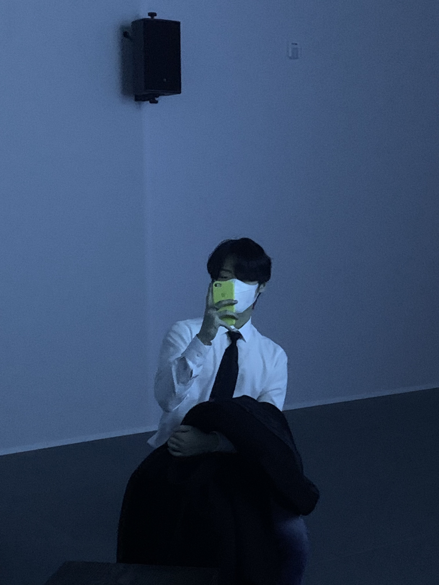
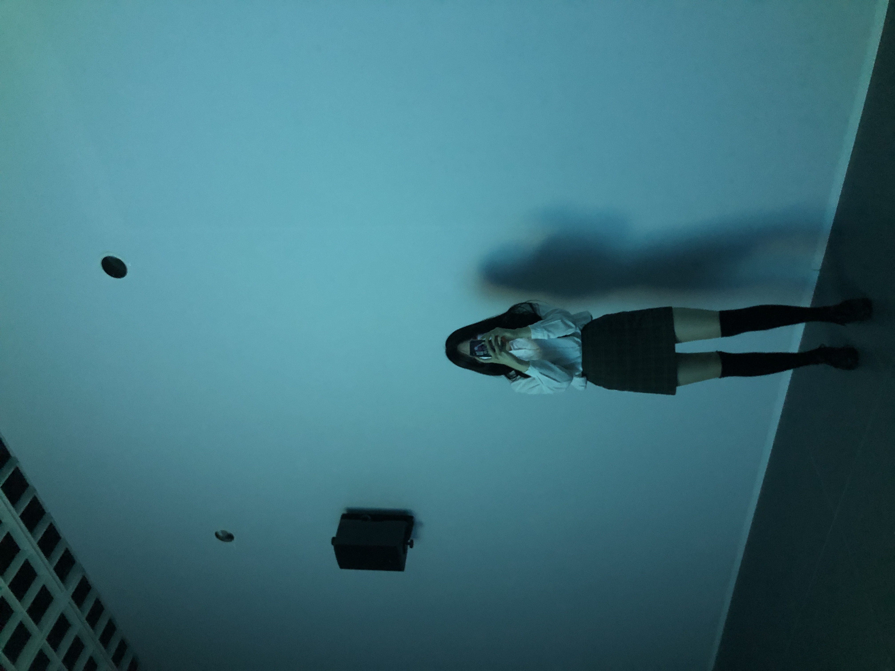

세계 최초 360도 감성체험 이머시브 전시 세계 최초 360도 감성체험 이머시브 전시 <비욘드더로드(BEYOND THE ROAD)>가 아시아 최초로 더 현대 서울 ALT.1 갤러리에 상륙한다. <비욘드더로드>는 세계 최초·최대 이머시브 공연 <슬립노모어>의 핵심 크리에이터 콜린 나이팅게일(Colin Nightingale)과 스티븐 도비(Stephen Dobbie) 그리고 트립합이라는 장르를 개척한 레이블 모왁스(Mo'Wax)의 수장이자 일렉트로닉 뮤지션 제임스 라벨(James Lavelle)의 콜라보레이션 작품이다. 2019년 런던 사치 갤러리에서 처음 공개됐으며, 당시 언론의 극찬과 폭발적인 관객 반응을 얻기도. 이번 전시는 제임스 라벨, 엉클(UNKLE)의 음악을 매개로 시각, 청각, 촉각, 후각, 공간지각 등 오감을 통해 마치 음악 속으로 걸어들어가는 듯한 입체적 경험을 제공한다. 특히 영화감독 대니 보일(Danny Boyle)과 알폰소 쿠아론(Alfonso Cuarón), 향수 디자이너 아지 글래서(Azzi Glasser) 등 영화, 디자인, 설치, 사진, 조명, 사운드 등 다양한 분야의 글로벌 아티스트가 참여해 음악을 새로운 방식으로 체험할 수 있도록 했다. 전시 기간은 7월 23일부터 11월 28일까지. 전시 예매는 7월 1일부터 인터파크 및 네이버 예약을 통해 가능하며, 7월 1일부터 7일까지는 50%, 8일부터 14일까지는 30%, 15일부터 21일까지는 10% 할인가로 티켓을 구매할 수있다. 더 자세한 내용은 <비욘드더로드> 공식 SNS을 통해 확인해보길 바란다.
<성수동에서 처음 만나고 두번째 만남에 갔던 첫 전시회. 그 날 유키는 아름다웠고 나를 예쁘게 담아주는 모습에 나는 감동했다.